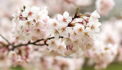
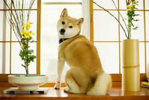
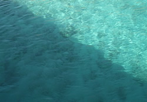
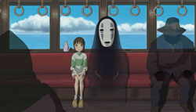
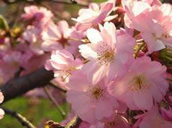

Greetings World! My name is Cathy.
This is a webpage all about me. My likes, dislikes, hopes, dreams, and favorite things.
Biography
I am currently a senior in high school. I have been enrolled in the Academy of Information Technology since my freshman year and enjoy the program because it is preparing me for the real world and allows me to dabble in, graphic design! So far, I'm most proficient with Microsoft Word and Photoshop.
Once I finish high school, I want to attend a four-year college and study accounting with a minor in psychology. In my sophmore year I did a internship with Joy Bruce, where I created a video with a group of people to get donations for a school in Haiti. It was a very exciting internship and I had fun learning about Haiti's lifestyle.
In my free time, I like to sit around at home and watch videos. I also like to play video games, listen to music, and hang out with friends.

My Favorite Quotation
"If you want to love others, I think you should love yourself first." - RM
My Favorite Foods
- Tteokbokki
- Ramen
- Boba
- Bahn Mi
My Top Ten Favorite Musical Artists
- eaJ
- Keshi
- Takayan
- Ph-1
- Agust D
- Stray Kids
- RM
- Kris Wu
- Jackson Wang
- NCT
Countries I'd Like to Visit and What I'd like to do there
- South Korea
- Jeju Island
- Bukchon Hanok Village
- Night Markets
- Japan
- Kyoto
- Cherry Blossoms
- Osaka
- New Zealand
- Nature
- Road Trip
- Extreme Sports
Other Favorite Things
| Favorite Flower | Plum Blossoms |  |
|---|---|---|
| Favorite Dog Breed | Shiba Inu |  |
| Favorite Season | Autumn | |
| Favorite Color | Light Sea Green |  |
| Favorite Song | "Always With Me" by Yumi Kimura |  |
| Favorite Scent | Japanese Cherry Blossoms |  |
Contact Information
Email: kyro.up@gmail.com
Phone: 123-456-7890